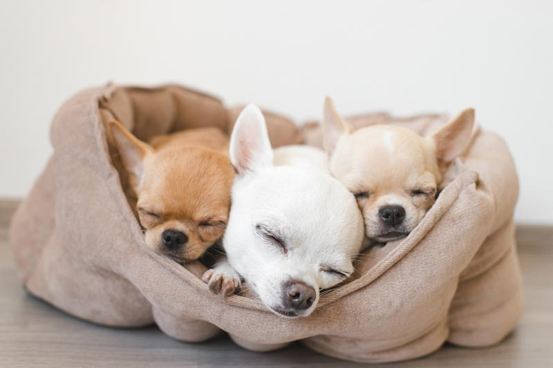
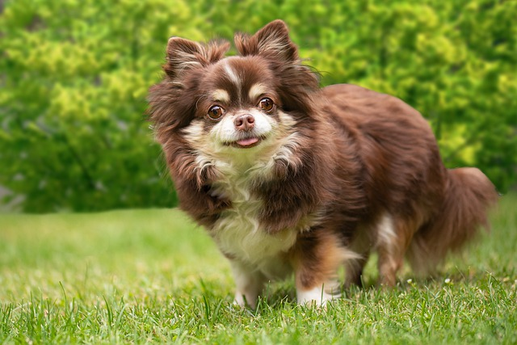

|
About
|
การเลือกสุนัขที่เหมาะสมกับไลฟ์สไตล์ของคุณเป็นสิ่งสำคัญ สุนัขแต่ละพันธุ์มีลักษณะและความต้องการที่แตกต่างกัน นี่คือการรีวิวสุนัขบางพันธุ์เพื่อช่วยให้คุณตัดสินใจได้ง่ายขึ้น |
 |
ชิวาวา (CHIHUAHUA) รู้จักชิวาวา (CHIHUAHUA) สุนัขตัวจิ๋ว และวิธีดีๆ ในการดูแลสุขภาพ
ลักษณะนิสัยชิวาวาเป็นสุนัขที่มีเสน่ห์เฉพาะตัว ด้วยขนาดที่เล็กและลักษณะหัวที่กลมคล้ายลูกแอปเปิ้ล ทำให้ดูน่ารักและโดดเด่น นอกจากรูปลักษณ์แล้ว ชิวาวายังเป็นสุนัขที่กระตือรือร้นและขี้เล่น ชอบที่จะใช้เวลาร่วมกับเจ้าของและติดตามไปทุกที่อย่างใกล้ชิด ด้วยความฉลาดและการเรียนรู้ที่รวดเร็ว ชิวาวาจึงเป็นสุนัขที่ง่ายต่อการฝึกฝน แต่ต้องใช้วิธีการสอนแบบเชิงบวก เพราะพวกเขาจะตอบสนองดีต่อการให้รางวัลและการให้กำลังใจ มากกว่าการสอนด้วยวิธีที่รุนแรง การเลี้ยงชิวาวาจึงเหมาะสำหรับคนที่ต้องการสุนัขเพื่อนคู่ใจ และสามารถเข้าร่วมกิจกรรมต่างๆ ได้อย่างสนุกสนาน รวมถึงการประกวดในสนามแข่งขันสุนัขที่ต้องการความสง่างามและความสามารถในการเรียนรู้
 ด้วยนิสัยขี้สงสัยบวกกับความช่างสำรวจของชิวาวา จึงมักเกิดเหตุการณ์ที่น้องหมาแอบลอดซี่รั้วออกไปนอกบ้านอยู่บ่อยครั้ง จึงต้องระวังในจุดนี้เพื่อป้องกันการเกิดอุบัติเหตุและการปะทะกับน้องหมาที่อยู่นอกบ้าน สำหรับครอบครัวที่มีเด็กให้อยู่ห่างจากชิวาวาก่อนดีกว่า เพราะสุนัขตัวเล็กมาก จึงมีโอกาสที่จะเกิดการบาดเจ็บของสุนัขเวลาเล่นกับเด็กๆ ได้ และแม้ว่าชิวาวาจะดูติดเจ้าของมาก แต่สำหรับคนแปลกหน้าแล้วยากที่ชิวาวาจะยอมไว้ใจ ดังนั้นถึงแม้สุนัขจะตัวจิ๋ว แต่ก็ช่วยเฝ้าบ้านได้ดีไม่แพ้กับสุนัขตัวใหญ่ๆ ที่สำคัญที่สุดคือชิวาวามักจะลืมไปว่าตัวเองเป็นสุนัขตัวเล็ก และพร้อมบวกกับสุนัขตัวใหญ่แสนดุดันแบบไม่มีอาการเกรงกลัว เวลาเจ้าของพาชิวาวาออกไปเดินเล่นก็ระมัดระวังไม่ให้ตัวจิ๋วไปป่วนใคร เพื่อความปลอดภัยของสุนัขชิวาวาเอง ขนาดของชิวาวาน้ำหนักตัวตามสายพันธุ์โดยเฉลี่ยไม่เกิน 2.7 กิโลกรัม (6 ปอนด์) ความสูงโดยเฉลี่ยอยู่ที่ 6-8 นิ้ว และมีอายุเฉลี่ยอยู่ที่ 14-16ปี ยิ่งสุนัขชิวาวาเมื่อมีขนาดตัวโตเต็มวัย ก็มีโอกาสที่จะป่วยหรือไม่สบายมากขึ้น ชิวาวาที่มีขนาดใหญ่หรือ oversize จะมีน้ำหนักอยู่ที่ 5.4 กิโลกรัม เหมาะที่จะเลี้ยงกับครอบครัวที่มีเด็กเล็กบุคลิกของชิวาวาเรื่องมั่นใจบอกเลยว่าสุนัขชิวาวาไม่เป็นรองใครแน่นอน แถมยังมีความกระตือรือร้น ช่างสงสัย ขี้ตกใจ ไม่ไว้ใจคนแปลกหน้า และเหมาะที่จะเลือกสุนัขสายพันธุ์นี้เพื่อเลี้ยงเป็นเพื่อนในครอบครัวโดยปกติแล้วชิวาวาจะมีความผูกพันธ์กับเจ้าของเพียงคนเดียวมากกว่า แต่เราก็สามารถแนะนำให้สุนัขสายพันธุ์ชิวาวารู้จักเพื่อนๆ หรือคนอื่นๆ ได้ตั้งแต่ยังอายุน้อยโดยการพาสุนัขไปพบเจอผู้คน ออกไปนอกบ้าน เพื่อให้มีประสบการณ์ที่ดีต่อการพบปะคนแปลกหน้า และเติบโตมาเป็นสุนัขชิวาวานิสัยดีมีความเป็นมิตร
|
|
|
||


.png)